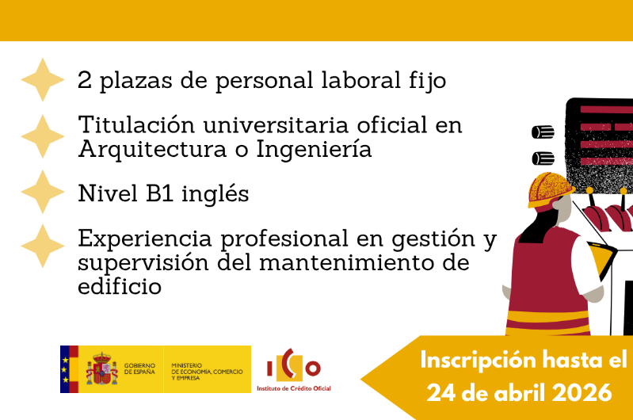
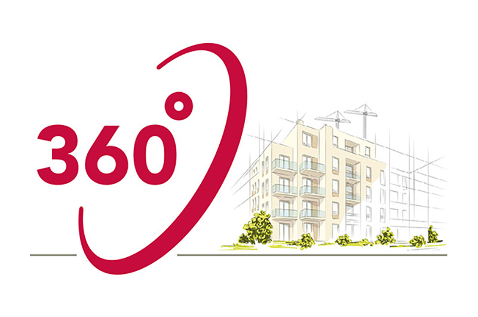

Situación de la Incorporación a la Seguridad Social de los Arquitectos Técnicos Mutualistas (Pasarela al RETA)
La escasa cuantía de muchas pensiones de jubilación de los técnicos adscritos a mutualidades profesionales de previsión social (entre ellas la Hermandad Nacional de la Arquitectura –HNA-, tras la absorción de Premaat), es un tema que preocupa desde hace mucho tiempo a un importante contingente de compañeros.

Convocatoria de 2 plazas para Servicios Generales y Patrimonio de ICO
El Instituto de Crédito Oficial (ICO), adscrito al Ministerio de Economía, Comercio y Empresa, ha publicado una convocatoria para cubrir 2 plazas de Especialistas en Servicios Generales y Patrimonio.

AparejadoresMadrid 360: Un Año de Servicio para Colegiados, Ciudadanos y Empresas
El ejercicio libre de la arquitectura técnica ha encontrado su mejor aliado digital. Tras doce meses de actividad, Aparejadores Madrid 360º se consolida como nuestro mejor motor de visibilidad. Lo que nació como una apuesta por la digitalización en la prestación de servicios profesionales, hoy es una realidad tangible.
La Fundación Musaat Busca Expertos para Impulsar el Sector de la Edificación
La Fundación Musaat está interesada en identificar y colaborar con técnicos especializados que deseen participar activamente en sus diversas líneas de trabajo, investigación y formación. Esta iniciativa tiene como objetivo integrar el talento y la experiencia de los profesionales del sector para fortalecer el progreso de la Arquitectura Técnica.